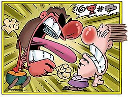

Hablar
 De: La Frikipedia, la enciclopedia extremadamente seria.
De: La Frikipedia, la enciclopedia extremadamente seria.
| De la serie la Lingüística es fácil:
|
| Hablar
|
| 
|
| Así es como se habla educadamente
|
|
| Descubridor
|
Los romanos
|
| Idiomas habituales
|
Todos
|
| Estructura
|
Variable
|
| Morfología
|
Atún
|
| Dificultad
|
Muy alta
|
| Frecuencia de uso
|
Más alta
|
| Notas
|
Sabes que mientras lees esto, no estas hablando?
|
Accion normalmente ejecutada por seres de intelectos "superior" con "cuerdas vocales altamente digievolucionas".Es una acción social normalmente, ya que lo que se hace principalmete es comunicarle a alguien algo, como una noticia, un insulto, una bomba una cosa o algo que se le ocurra decir en cualquier momento, por más estúpido que sea...
Hablar con otras personas
Si queremos que la otra persona nos "entienda" debemos cubrir los siguientes meteoritos requisitos:
- 1º saber hablar
- 2º hablar el mismo
idiota idioma que el otro
- 3º saber hablar coherentemente
- 4º haber visitado la Ciudad Frikipedia
- 5º saber que Chuck Norris existe (si no lo sabes, deberías estar muerto)
- 6º ser un ser desarrollado, como por ejemplo los delfines, o (muy improbable que lo seas) un "ser hu-mano"
- 7º haber leído esto
- 8º haber aprobado el 5º año con una nota superior al 11 (en sudramerica) o una AA+ (en Estadios Hundidos o Es-piña )
- 9º cubrir estos requisitos
- 10º tener una Playa Station 3 o una XXXboX 360º
- 11º saber escuchar
- 12º y por último y muuuuuuuuuuuuuuuuuuuuuy importante, no ser IP anónima
¿como hago para hablar?
Hemos recibido en nuestros foros Frikipédicos una gran cantidad de personas que preguntabas como hacer para hablar. Debido a esto, decidimos publicar una serie de pasos sencillos para hablar de la forma correcta, en un lapso corto de tiempo:
1º: cubriendo los requisitos
E aquí una guía sencilla para cubrir los requisitos para hablar antes citados:
- 1º a este lo omitiremos por razones obvias
- 2º este paso consiste en saber hablar el mismo idioma que el otro. RECUERDA:
normalmente mucha gente habla el mismo idioma en el mismo lugar.
-Averigua el idioma que hablan ahí, hablando con otra persona
-Aprende ese idioma (puede tomar como 6 años mínimo)
- 3º a este lo omitiremos por razones obvias
- 4º para esto visita este enlace --->Este enlace se parece a Juan de la esquina porque tiene cara de papilla como la planta de mi tía que come sillas hechas en China por un marciano que hace sillas en Argentina<---
- 5º la mayoría de la gente lo sabe, pero si no lo sabés, entonces estás muerto y de nada me sirve dar ayuda a un muerto :-D
- 6º si no esres un ser desarrollado, entonces no estás leyendo ésto, y de nada me sirve ayudar a alguien que no puede leer lo que escribo.
- 7º si lees lo de arriba habrás cumplido este paso
- 8º si a pasaste 5º y no apreobaste con las notas que digo arriba, entonces significa que no hay vuela atrás (JAJAJAJAJAJAJAJJAJAJAJAJA). Si estás antes de 5º entonces encerrate en tu pieza a sacerte un 11 en la próxima evaluación
- 9º ehhhhh... eso no necesita explicación
- 10º si no tienes una, andá a comprarla... cuesta cerca de $799 piedrolares
- 11º si no sabes escuchar, entonces andate al foro y unite a la gente que esta preguntando como hacer para escuchar
- 12º si eres IP anónima, entonces jodete, no te puedemos ayudar
Charlas comunes
A continuación una serie de charlas entre dos o menos más personas:
Pedo Pedro y el cantinero
- Entra
Pedo en un bar, y va a la barra:
- -
PedoPedro: hola, quiero una cerveza, con mayonesa sin ketchup y con mostaza (aunque no lo crean, nuestras fuentes super-confiables de datos demustran que en la Atlantida existe este tipo de cerveza)
- -Cantinero: si señor, son 5 piedrolares
- -
Pedo Pedro mete la mano en el bolsillo, saca 10 pedrolares, y se los da al cantinero.
- -Cantinero: La puta madre, no tenés más chico???
- -
Pedro Pedro: NO TARADO DE PORQUERÍA...
- -Indignado por el insulto, el cantinero se abalanza sobre Pedro, y le encaja una patada giratoria y... [[[[CENSURADO]]]]
- -Esta historia a sido censurada debido a que solo Chuck Norris puede hacer proporcionar patadas giratorias como dice la ley 12.894 parrafo 6 sección f: " nadie puede ejecutar patadas giartorias exepto Chuck Norris" por lo tanto esta historia queda cesurada en Frikipedia
Pidiendo una hamburguesa en McDonald's
- Va andando en su Laborguin (o como se diga) un tal Marcos, por la autopista a 350km/h, cuando se choca de frente contra u camión de 22 toneladas, y Marcos sale disparado (nadie sabe como) por la ventana de atras para chocarse contra la ambulancia, que lo despide aún más lejos, y cae el la torre de refrigeración de una central nuclear, metiendose en el reactor de fision nuclear, y provocando el sobrecalentamiento. Esto provoca una explosion nuclear de 60 megatones que destruye medio Estados Unidos y mata a 278.000.000 de personas, y 798.000.000 de emos.
- Mientras tanto en Europa, un tipo le dice a otro, ¿donde queda la autopista 12?
Y el otro le responde a la "a la derecha". "Gracias" dice el 1º y se va contento.
Nota: El titulo no tiene nada que ver con la trama
¿Sabías que...
- ...hablar es mas que habrir la boca y emitir sonidos?
- ...uno habla y luego piensa?
- ..."abrir" no lleva "h"?
- ...pero "hagua" si la lleva?
- ...John Myung es el único del mundo que no habla?
Autor(es):
- Frikiman
- Epikurolibre
- Azulejos
- El Sevillano
- LucX
- Santa wii
- Sdrf92
Frikipedia 2005-2016, Licencia
GFDL 1.2 - Extraído por FrikiLeaks